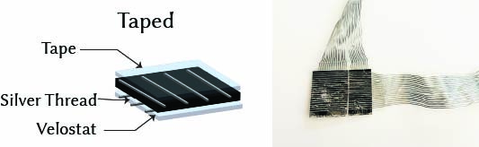
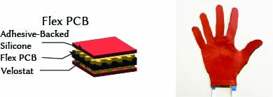
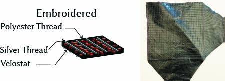
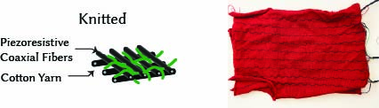

Resistive Matrix-based tactile sensors can be made using a wide range of fabrication techniques. Detailed instructions for making sensors using the techniques of direct taping, flexible printed circuit boards, digital embroidery, and machine-knitting are below. Each technique has been tested and is compatible with the WiReSens Toolkit. We provide a recommended WiReSens Toolkit-compatible configuration file for each sensor based on our experiments.
Direct Taping

Material List
- Pressure-sensitive conductive sheet (Velostat/Linqstat)
- Conductive thread
- Conductive fabric
- Conductive tape
- 34-pin ribbon cable
- 34-pin connector
- Thin adhesive (3M 467MP or similar)
- Thin plastic wrap (e.g., Saran Wrap)
Instructions
- Refer to material list and prepare materials.
- Cut pressure-sensitive sheet into desired shape.
- Cut 2 pieces of thin adhesive into desired shape.
- Align horizontal electrodes on one of the thin adhesive.
- Attach the adhesive with aligned electrodes on one side of the pressure-sensitive film.
- Align horizontal electrodes on the other piece of thin adhesive.
- Attach the adhesive with aligned electrodes on the other side of the pressure-sensitive film.
- Carefully remove the cover of adhesive, and attach the thin plastic sheet on top of it for insulation.
- Repeat for the other side.
- Make electrical connection between the aligend vertical/horizontal electrodes with 2 sets of ribbon cables using either conductive/electrical tape or solder.
- Connect the ribbon cable with the readout circuit using the connector.
Configuration File
Flexible Printed Circuit Board

Material List
- Adhesive-Backed Silicone Rubber (McMaster 9010K51)
- Pressure-sensitive Conductive Sheet (Velostat/Linqstat)
- PLA Filament
- 0.5 mm Pitch Flex Cable Connectors (16-pin)
Assets
- Front PCB Gerbers
- Front PCB Component Placement (.pos)
- Back PCB Gerbers
- Back PCB Component Placement (.pos)
- Top PCB Manufacturing Detail (PDF)
- Bottom PCB Manufacturing Detail (PDF)
- 3D-Printed Alignment Guide (.STL)
- Front/Back PCB BOM (.xlsx)
- Laser Cutting Outline (.svg)
- Laser Cutting Settings (.txt)
{kind=link}
Instructions
-
Order the flex PCB electrode arrays Use the Pcbway Instant Quote Tool to manufacture the top and bottom flex PCBs.
-
Submit two separate orders: one for the top array, one for the bottom array.
-
Carefully follow the fabrication specifications provided in the respective manufacturing detail PDFs.
-
Upload:
- The appropriate Gerber files.
- Component placement files (
.pos). - The shared BOM file.
-
In the order comments, copy-paste the notes from the manufacturing detail PDFs exactly.
-
-
Laser cut the Velostat and silicone rubber layers Use a CO₂ laser cutter or outsource the job to a service such as:
Instructions:
-
Use the provided
smallGloveCut.svgoutline file. -
Cut two silicone rubber layers:
- One in the default orientation.
- One mirrored horizontally.
-
Cut one Velostat sheet.
-
Reference
lasercutting.txtfor ideal power/speed/frequency settings.
-
-
3D print the alignment guide Use the provided
.STLfile to print the mold used for layer alignment.-
Print using PLA or other rigid filament.
-
Recommended infill: 20–40%, no supports needed.
-
If you prefer to outsource, try:
-
-
Assemble the PCB layers
- Place the bottom PCB into the alignment mold.
- Remove the adhesive backing from the PCB (if applicable).
- Place the laser-cut Velostat on top, aligning carefully.
- Gently remove the stack from the mold, flip it upside down.
- Insert the top PCB into the mold.
- Carefully sandwich the bottom PCB and Velostat onto the top PCB.
- Remove the assembled three-layer structure from the mold.
-
Add the silicone layers
- Place the first silicone sheet in the mold, adhesive side up.
- Remove the backing tape.
- Insert the three-layer PCB structure on top of the silicone.
- Remove the partial stack and repeat with the mirrored silicone sheet on the opposite side.
- You should now have a five-layer sandwich: silicone–PCB–Velostat–PCB–silicone.
-
Connect the flex cables
- Gently lift the 0.5 mm FFC connector latches.
- Insert the flex cables that connect the sensor to your readout electronics.
- Close the latches to secure the connection.
Note: If you don’t have access to a laser cutter or 3D printer, you can outsource fabrication to online services:
- Laser cutting: Ponoko, SendCutSend
- 3D printing: Craftcloud, Treatstock
Configuration File
Digital Embroidery

Material List
Assets
- Top Electrode Embroidery File (.pes)
- Bottom Electrode Embroidery File (.pes)
- 34-pin ribbon cable
- 34-pin connector
Instructions
- Refer to material list and prepare materials.
- Use the above digital embroidery design file or generate your own
- Cut pressure-sensitive sheet into desired shape.
- Mount pressure-sensitive sheet onto the digital embroidery frame.
- Load conductive thread as top thread and polyester thread as bobbin.
- Run machine with the first embroidery pass for vertical electrodes.
- Load conductive thread as bobbin and polyester thread as top thread.
- Run machine with the second embroidery pass for horizontal electrodes.
- Add optional insulating layer using fabric or plastic film with adhesive.
- Make electrical connection between the vertical/horizontal electrodes with 2 sets of ribbon cables using either conductive/electrical tape or solder.
Configuration File
Machine Knitting

Material List
- Graphite nanoparticles
- Copper Nanoparticles
- PDMS
- OS2
- Stainless Steel thread
- Acrylic Knitting Yarn
- 34-pin ribbon cable
- 34-pin connector
Assets
Instructions
- Prepare piezoresistive coaxial fibers using thermal curing setup as described here
- Knit garment with acrylic yarn
- Inlay functional fibers
- Make electrical connection between the vertical/horizontal functional fibers with 2 sets of ribbon cables using either conductive/electrical tape or solder.